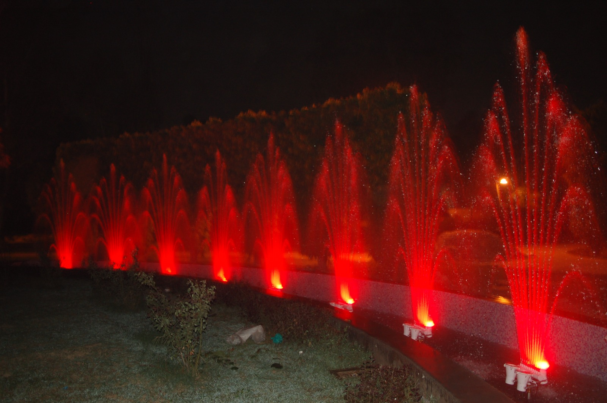

Classica
Graceful tiers and timeless proportions for garden courtyards, grand entrances and statement landscapes.
Discover ClassicaChambal Fountain · The art of water
Sculptural fountains and refined water features that bring calm, character and a sense of occasion to Indian homes, villas, hotels and gardens.

Discover Chambal Fountain
From grand garden centrepieces to understated architectural details, explore styles that complement the character of your space.
View all collectionsGraceful tiers and timeless proportions for garden courtyards, grand entrances and statement landscapes.
Discover Classica
Clean geometry and tranquil water forms for modern residences, hospitality spaces and designed landscapes.
Discover Moderna
A beautiful use of vertical space for intimate courtyards, verandas, entrance walls and smaller gardens.
Discover Parete
The Chambal Fountain Difference
The right fountain feels as though it has always belonged in its setting. Considered scale, material, finish and water movement help create a feature that works beautifully with your architecture.
Made for memorable places
A gentle sound at the entrance. A sculptural centrepiece in the garden. A quiet moment beside the courtyard.


A simple beginning
Every project starts with a conversation. Tell us what you have in mind and we will help you understand the next steps.
Talk to our teamTell us about your space, preferred style, approximate dimensions and inspiration.
Review suitable designs, materials, finishes and practical site requirements.
Get a project-specific quotation in Indian rupees, with applicable taxes, delivery and installation considered separately.
Good to know
A few things people ask before starting a fountain project in Kota or anywhere in India.
Still have a question? Talk to us ↗We design garden fountains, stone fountains, wall-mounted fountains, indoor water features and larger architectural or landscape water features. Styles range from classical tiered designs to contemporary and bespoke forms. Every fountain is made to order around the space it is intended for.
Fountain prices depend on the design, size, material, finish, water system and site conditions, so we do not publish fixed online prices. Share your requirements through the contact form or WhatsApp and we will prepare a project-specific quotation in Indian rupees.
Yes. Our Custom Studio includes an interactive 3D preview with 14 designs, multiple stone colours, water tints, finishes and scale options. You can rotate the model, choose your preferences and send the preview details directly to our team on WhatsApp.
Yes — we take up fountain enquiries in Kota and across Rajasthan, as well as projects elsewhere in India. Delivery, installation and site requirements are discussed during consultation and reflected in your project-specific quotation.
The timeline depends on the complexity of the design, the chosen material and how ready the site is. We share a realistic schedule after reviewing your brief and site details.
Yes. Share a reference image, sketch or a photograph of the proposed space through the contact form or WhatsApp. We review the idea, suggest practical options and help shape it into a workable fountain design.
The 3D studio lets you preview stone colours such as Carrara White, Travertine, Sandstone, Terracotta, Concrete Grey, Granite Noir, Aged Bronze and Forest Green, along with honed, polished and weathered finishes. The final material selection is confirmed during consultation.
Use the enquiry form on our Contact page or message us on WhatsApp at +91 98290 29406. Tell us your location, approximate space size, preferred style and timeline. The form prepares a message for you to review before you press send in WhatsApp.
Your space. Your statement.
Whether you are planning a home garden, a hotel courtyard or a larger landscape, start with a few details about your project.